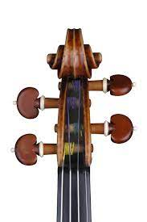
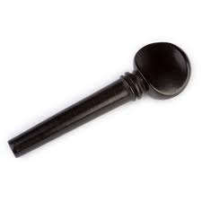
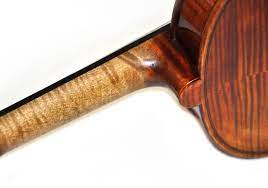
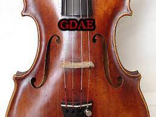
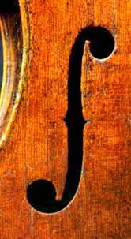
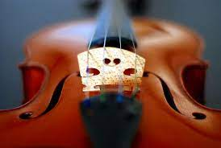
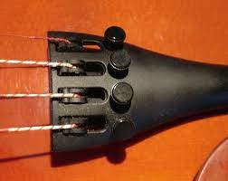
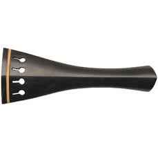
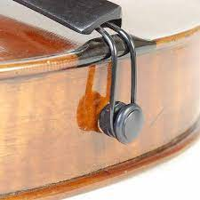

The scroll is the decoratively carved 'head' of
the violin - it's the fancy twirly bit at the top! It's a chance to show off their skill and artistry!

Violin pegs are how a violinist tunes their instrument.
The pegs hold the strings taut and that tautness causes the string to vibrate at
the correct frequency.

The neck of the violin is the part of the instrument
between the pegbox and the body. The neck allows violinists to hold the
instrument.

The violin has four strings.
From high to low, the strings on the violin are E, A, D, and G.
This is where
the violin's sound vibrates from.

The f-shaped openings through which air escapes:
The more elongated these are, the more sound a violin can produce.

The bridge is the narrow piece of wood that supports
the strings and is held up by the tension of the strings.

Fine tuners allow the violinist to change the
pitch of the strings quickly and with little effort.

The tailpiece performs its essential service
on violin—creating sound by anchoring the strings across the
body of the instrument, pegs to end button.

The tailpiece of the modern violin
attaches at the end of the tailpiece and loops around
the end button so it has a secure anchor point to hold
the tailpiece in place.
The violin is composed of 90 parts. A few very important parts are included on this page. Hover over the images to learn more about the specific parts!